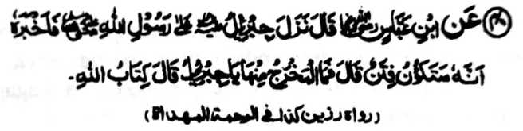

Hadith -40

Miyakathitayan ko Ibn-e Abbas (Radhiallaho 'Anhoma) a pitharo iyan, “Tomiyoron so Jibrael (Alaihis Salaam) ko Rasulollah (Sallallaho ‘Alaihi Wasallam) na piyanothol iyan non a mata-an a phaka-oma den so tiyoba. Pitharo iyan, “Antona-ai khilidason, Hay Jibrael?” Pitharo iyan, “So Kitab o Allah.”
So kinggolalanen ko Kitab o Allah a khabaloy a linding ko tiyoba, go so kabatiya-a on na okit a kapalidas ko manga rarata. Miya-aloy den ko Hadith a ika 22 a opama ka so Qur’an na pembatiya-an ko walay, na tomoron non so kalilintad ago so limo, go awa-an o Shaitan. So manga Ulama na initapsir iran ko tiyoba na so kaphaka-oma o Dajjal [Rido-ai o Isa (Alaihis Salaam)], o di na so kiyagobat o manga Tartars, ago so manga lagid iyan a miyanggola-ola. Aden a matas a ‘riwayat’ a pho-on ko Ali (Radhiallaho ‘Anho) a miyadalemon mambo so lagid o madadalem sangka-iya a Hadith.
Miya-aloy sangkoto a riwayat a pho-on ko Ali (Radhiallaho ‘Anho) a so Hadrat Yahya (Alaihis Salaam) na pitharo iyan ko Bani Israel, “Inisogo rekano o Allah so kabatiya-a ko Kitab Iyan, ka o nggola-ola-a niyo to na miyaka-ibarat kano ko tao a miyakasoled ko kota, sa apiya anda thampar so gomogobat na aya maba-ak iran na so Katharo o Allah a aya-on somisiyap na pekhabogao niyan siran.”